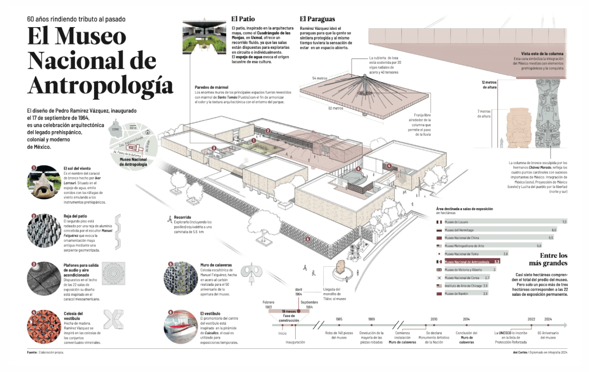

Lo avanzado
Inicié este diplomado en julio del 2024. Mi experiencia previa con la infografía se resume en el trabajo que he hecho desde hace cinco años en el periódico El Universal, participando como ilustradora editorial en las infografías que se realizan.
Con lo aprendido y avanzado hasta octubre del 2024 en el diplomado, he podido formular e implementar una infografía como la que sigue:
Además, he podido explorar otras formas de presentar información, por ejemplo, lo aprendido en el módulo recién pasado y publicado en Instagram.
El desafío que ahora sigue es aprender a desplegar gráficas de distintos tipos en una infografía digital a implementar en la WWW.